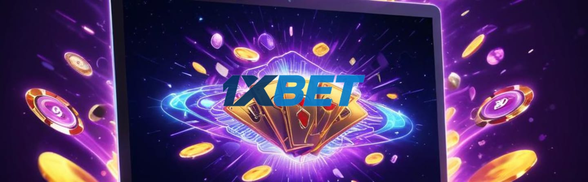

Поскольку доступ к 1xbet официальному сайту иногда ограничен, важной становится информация о 1хбет зеркале. Оно служит рабочей копией сайта и обеспечивает непрерывность игры. В новостях часто публикуют ссылки на актуальное 1xbet зеркало сегодня и другие варианты 1xbet зеркала рабочее. Это облегчает вход на платформу через 1хбет вход, обходя блокировки.
Следить за обновлениями и иметь под рукой актуальное 1xbet зеркало — значит оставаться в курсе событий, не теряя возможности полноценно наслаждаться азартом на платформе 1хбет, сохраняя доступ ко всем функциям и новым играм.
Онлайн-казино 1xBet как постоянно обновляющаяся платформа
Платформа 1xbet постоянно развивается, предлагая свежие игровые решения и обновления. На 1xbet официальном сайте регулярно добавляются новые слоты, живые игры и другие продукты, что позволяет поддерживать интерес пользователей. Такой динамичный процесс обновления характерен для 1хбет, где задачи поддержки актуальности и удобства интерфейса стоят на первом месте.
Для доступа к платформе часто используют 1хбет вход через официальные каналы или через 1xbet зеркало в случае блокировок. Рабочее 1xbet зеркало и актуальное 1xbet зеркало сегодня обеспечивают стабильный доступ к сервису без задержек и ограничений. Это важный элемент поддержки пользователей, учитывая особенности работы с азартными играми в разных регионах.
Обновления 1xbet затрагивают не только ассортимент игр, но и технические аспекты. Оптимизация загрузки, улучшения функционала и расширение возможностей для игроков делают платформу удобнее. Таким образом, онлайн-казино 1xBet остаётся современным ресурсом с широким выбором развлечений благодаря постоянному развитию.
Новые игры в онлайн-казино 1xBet
1xbet официальный сайт постоянно обновляется, предлагая пользователям свежие игровые форматы и расширенный ассортимент развлечений. Среди новинок появляются игры с улучшенной графикой и адаптацией под мобильные устройства, что особенно востребовано при 1хбет входе с разных гаджетов. Расширяют свои разделы как классические слоты, так и современные видеослоты с уникальными механиками.
Для многих игроков актуально 1xbet зеркало сегодня, позволяющее обходить блокировки и сохранять доступ ко всем функциям сайта. Важной частью стали обновления в существующих разделах — исправлены баги, добавлены новые уровни и режимы, что делает процесс игры интереснее и динамичнее. 1xbet зеркало рабочее становится надёжным помощником для тех, кто ценит стабильность и удобство.
Появление 1хбет зеркала и активное поддержание актуального 1xbet зеркала дают возможность не прерывать игру даже при недоступности основного портала. Разнообразие форматов и постоянное совершенствование интерфейса поддерживают интерес у разных категорий пользователей.
Обновления игровых разделов 1xBet
Игровые разделы на 1xbet регулярно обновляются для улучшения пользовательского опыта и повышения удобства. На 1xbet официальный сайт постоянно добавляют новый контент: свежие слоты, игры с живыми дилерами и тематические турниры. За счёт этого 1хбет поддерживает интерес игроков и обеспечивает разнообразие развлечений. Помимо этого, интерфейс становится более интуитивным и адаптивным — чтобы на разных устройствах вход в 1хбет был быстрым и комфортным.
Для обхода возможных ограничений, связанных с доступом, разработчики активно обновляют 1xbet зеркало и 1xbet зеркало рабочее, обеспечивая их актуальность. Пользователи могут воспользоваться как актуальным 1xbet зеркалом, так и 1xbet зеркалом сегодня, чтобы без препятствий попасть на платформу. Аналогично, зеркала 1хбет и 1хбет вход также обновляются постоянно, что стабилизирует работу сервиса.
Оптимизация направлена на снижение времени загрузки страниц и повышение стабильности игр. Нововведения в 1xbet реализуются с учётом отзывов пользователей, что помогает сохранять качество и безопасность рулетки, покера и других популярных развлечений. В результате обновления делают сайт 1xbet более современным, а игровой процесс — плавным и удобным даже для новичков.
Как появляются новинки в онлайн-казино 1xBet
Новые игры на 1xbet официальном сайте появляются благодаря постоянной работе специалистов. Сначала разработчики тщательно тестируют каждую новинку, чтобы убедиться, что она корректно работает. Такой подход помогает избежать сбоев и неприятных сюрпризов у игроков как на 1хбет входе, так и через альтернативные механизмы доступа.
После успешного тестирования игра интегрируется в общий каталог. Важно, чтобы она корректно запускалась на разных устройствах — от компьютеров до смартфонов. Это позволяет игрокам пользоваться обновлениями без ограничений, даже если они используют 1xbet зеркало или 1xbet зеркало рабочее.
Для случаев, когда основной сайт недоступен, актуальное 1xbet зеркало и 1xbet зеркало сегодня становятся частью системы. Это гарантирует постоянный доступ к свежим играм и всем возможностям платформы 1хбет. Вся работа по обновлениям направлена на стабильность и разнообразие игрового процесса.
Изменения в интерфейсе и функционале платформы
Платформа 1xbet постоянно обновляется, чтобы улучшить опыт пользователей на 1xbet официальном сайте. Часто параллельно с запуском новых игр меняется и интерфейс, а также добавляются функции, которые делают навигацию проще и удобнее. Например, раздел с играми теперь загружается быстрее, а дизайн стал более минималистичным, что облегчает поиск интересующего контента.
Для игроков, сталкивающихся с ограничениями доступа, 1хбет вход и 1xbet зеркало предлагают альтернативные пути входа. Особенно актуальны 1xbet зеркало рабочее и актуальное 1xbet зеркало, которые регулярно обновляются, чтобы избежать блокировок. Сегодня многие активно используют 1xbet зеркало сегодня для стабильной работы платформы.
Стоит отметить, что 1хбет зеркало часто интегрируется с новыми функциями, сохраняя при этом полный функционал основного сайта. Это позволяет клиентам не терять привычные возможности, даже если доступ к 1xbet официальный сайт временно закрыт.
Актуальные игровые тренды в онлайн-казино 1xBet
1xbet продолжает адаптироваться к меняющимся запросам игроков, предлагая разнообразные форматы. На 1xbet официальном сайте все чаще появляются гибридные игры с элементами живого общения и автоматическими ставками. Развитие live-игр стало ключевым направлением, где 1хбет вход обеспечивает стабильный доступ к трансляциям с реальными дилерами.
Новые механики усиливают вовлеченность, внедряя динамические бонусы и интерактивные мультиставки. Пользователи регулярно ищут 1xbet зеркало, чтобы обходить блокировки и сохранять подключение к платформе. Среди вариантов популярны актуальное 1xbet зеркало и 1xbet зеркало сегодня, которые гарантируют работу без сбоев.
Для поддержания непрерывного доступа важна оперативная замена ссылок — 1xbet зеркало рабочее появится именно в тот момент, когда стандартный адрес перестает отвечать. 1хбет зеркало также часто обновляется, что делает процесс игры более гибким. В целом, 1xbet демонстрирует динамичный подход к инновациям, что отражается как в формате игр, так и в технической поддержке доступа.
Вход в аккаунт для доступа к новинкам 1xBet
Для пользователей 1xbet вход в аккаунт является стандартным шагом для получения доступа к игровым разделам и обновлениям. Через личный кабинет можно следить за свежими новинками и актуальной информацией, которая доступна только авторизованным игрокам. Платформа 1хбет с периодическими изменениями доменов предоставляет обходные пути для стабильного доступа. Актуальное 1xbet зеркало и 1xbet зеркало сегодня помогают обойти блокировки и сохранить функциональность сайта.
Важно знать, что 1xbet официальный сайт может иметь несколько рабочих версий, среди которых 1xbet зеркало рабочее — основной инструмент для тех, кто сталкивается с ограничениями. Аналогично, 1хбет зеркало позволяет быстро войти в систему без лишних сложностей. Использование зеркал обеспечивает бесперебойный доступ к личному кабинету и расширяет возможности взаимодействия с платформой 1хбет.
Регистрация в онлайн-казино 1xBet и доступ к обновлениям
Регистрация на 1xbet официальном сайте – первый шаг для тех, кто хочет начать игру и получить доступ к функционалу платформы. Процесс достаточно простой: нужно заполнить стандартные данные и подтвердить аккаунт. После регистрации пользователь получает единый профиль, через который осуществляется 1хбет вход. Важно помнить, что для обхода возможных блокировок 1xbet зеркало рабочее всегда есть в актуальном состоянии, что позволяет сохранить доступ к играм без перебоев.
В рамках одного аккаунта доступны все обновления и функции сайта. Независимо от того, используете ли вы 1xbet зеркало сегодня или актуальное 1xbet зеркало, вход происходит через один и тот же профиль, что упрощает управление счетом и настройками. Такие зеркала 1хбет позволяют не только заходить на сайт в обход ограничений, но и оставаться в курсе последних новостей и изменений.
Таким образом, регистрация на 1xbet и использование актуальных зеркал обеспечивают постоянный доступ к онлайн-казино, сохраняя единство учетной записи и удобство для игроков.
Безопасность и стабильность при обновлениях 1xBet
Обновления на 1xbet официальный сайт проводятся регулярно для поддержания стабильной работы и безопасности сервиса. Это помогает избежать сбоев и быстрого устаревания программного обеспечения. При 1хбет вход и использовании зеркал важно помнить, что доступ к 1xbet зеркалу или 1хбет зеркалу может отличаться из-за изменений в интернет-блокировках. Поэтому актуальное 1xbet зеркало сегодня помогает пользователям попасть на платформу без перебоев.
Для защиты данных клиенты 1хбет применяются современные методы шифрования и контроля доступа. Использование 1xbet рабочего зеркала также гарантирует одинаковый уровень защиты, как и основной сайт. Важно учитывать, что несмотря на все меры, абсолютных гарантий бесперебойной работы и полной безопасности при обновлениях нет, так как системы могут сталкиваться с техническими сложностями. Тем не менее, практика показывает, что стабильность и сохранность пользовательских данных на 1xbet сохраняется на высоком уровне даже при переходе между зеркалами.
Использование онлайн-казино 1xBet на разных устройствах
Платформа 1xbet и её 1хбет официальный сайт постоянно обновляются, учитывая различные устройства пользователей. Новые игры и улучшения гарантируют одинаково удобный интерфейс как на ПК, так и на мобильных устройствах. Такой подход помогает обеспечить единый пользовательский опыт вне зависимости от платформы.
Для доступа можно использовать 1хбет вход через браузер или специальные приложения. При проблемах с доступом всегда можно обратиться к актуальному 1xbet зеркалу или 1xbet зеркало сегодня, что делает процесс стабильным и быстрым.
Работа с 1xbet зеркало рабочее позволяет обходить ограничения и сохранять высокую скорость загрузки игр и функций. При этом 1xbet зеркало или 1хбет зеркало всегда поддерживаются в актуальном состоянии, что облегчает пользователю выбор правильного способа входа.
В итоге, доступ к 1xbet стал более гибким, ведь единый дизайн и функционал одинаково хорошо работают на разных устройствах, будь то компьютер или смартфон.
Для кого подходят новости онлайн-казино 1xBet
Новости онлайн-казино 1xBet актуальны для тех, кто постоянно следит за свежими играми и обновлениями на 1xbet официальном сайте. Пользователи, которым важен быстрый 1хбет вход и работа зеркал, находят информацию про 1xbet зеркало и актуальное 1xbet зеркало особенно полезной. Особенно это касается ситуаций, когда основной сайт недоступен, и нужно найти 1xbet зеркало сегодня или рабочее 1xbet зеркало. Такая аудитория заинтересована в новинках платформы, функциональных изменениях и технических нововведениях. Люди, активные на 1хбет, ценят возможность быстро узнать про надежные способы обхода блокировок, чтобы не потерять доступ к любимым играм и ставкам. Таким образом, новости 1xbet становятся источником важных данных для постоянных игроков и тех, кто только начинает знакомиться с платформой 1хбет.
Часто задаваемые вопросы о новинках 1xBet
На платформе 1xbet регулярно появляются обновления и новые функции, которые помогают пользователям получить больше удобства и возможностей. Часто вопросы связаны с доступом — как правильно выполнить 1хбет вход, где найти актуальное 1xbet зеркало и как отличить рабочее 1xbet зеркало от нерабочего. Здесь расскажем основные нюансы про 1xbet официальный сайт, 1хбет зеркало, а также где искать 1xbet зеркало сегодня и актуальное 1xbet зеркало в случае блокировок.
Если не получается зайти на 1xbet официальный сайт, это часто связано с блокировками со стороны провайдеров. В таком случае можно использовать 1xbet зеркало — альтернативный адрес, который позволяет обойти ограничения. Важно искать только актуальное 1xbet зеркало, чтобы гарантировать стабильный доступ.
Термины 1xbet зеркало и 1хбет зеркало по сути означают одно и то же — альтернативные ссылки на официальный ресурс для обхода блокировок. Разница лишь в написании, но функционально они идентичны.
Рабочее 1xbet зеркало сегодня можно найти на проверенных специализированных сайтах и форумах, где публикуют актуальные ссылки. Следует регулярно проверять обновления, так как зеркала часто меняют адреса.
Чтобы зайти на 1хбет вход через зеркало, достаточно перейти на активную ссылку зеркала и ввести свои регистрационные данные. После этого система работает так же, как и на основном сайте, позволяя пользоваться всеми функциями без ограничений.
Если 1xbet зеркало перестало работать, значит его заблокировали или изменился адрес. В этом случае нужно найти новое актуальное 1xbet зеркало и попробовать войти через него. Часто помогают официальные каналы или тематические сообщества, где публикуют свежие ссылки.
На 1xbet официальном сайте регулярно обновляется ассортимент игр. Чаще всего появляются новые игровые автоматы разных форматов — от классических слотов до видеослотов с сложной механикой и бонусами. Также в 1хбет вход добавляют разнообразные карточные и настольные игры, включая обновленные версии с современным дизайном. Благодаря теме живого казино, расширяется выбор игр с живыми дилерами и интерактивными элементами. Чтобы не пропустить обновления, стоит использовать 1xbet зеркало или 1хбет зеркало, так как иногда доступ к основному ресурсу временно ограничен. Актуальное 1xbet зеркало сегодня помогает оставаться в курсе всех новинок без перебоев.
Платформа 1xbet регулярно обновляется, чтобы обеспечивать стабильную работу и актуальность контента. На 1xbet официальном сайте и через 1хбет зеркало появляются нововведения и исправления, которые поддерживают высокий уровень сервиса. Пользователи часто проверяют 1хбет вход или ищут 1xbet зеркало сегодня, особенно актуальное 1xbet зеркало, чтобы иметь доступ к последним функциям. Рабочее 1xbet зеркало обновляется параллельно с основным сайтом, что гарантирует бесперебойный доступ к возможностям платформы.
Для игры на 1xbet, будь то через 1xbet официальный сайт или 1хбет зеркало, не требуется обновлять аккаунт. Используется единый аккаунт, благодаря которому можно получать доступ ко всем новым играм без дополнительных действий. Вход в личный кабинет 1хбет вход возможен через актуальное 1xbet зеркало или рабочее 1xbet зеркало сегодня. Таким образом, вне зависимости от того, пользуетесь ли вы 1xbet зеркало или 1хбет зеркало, регистрация и доступ остаются стабильными и едиными.
Играя на 1xbet официальном сайте или через 1xbet зеркало, стоит помнить о базовых правилах безопасности. Новые игры на 1хбет часто проходят проверку перед запуском, но для уверенности лучше использовать актуальное 1xbet зеркало сегодня. При входе на платформу важен правильный 1хбет вход, чтобы избежать мошенников. Если основной сайт недоступен, надежным считается 1xbet зеркало рабочее, позволяющее безопасно продолжить игру. Важно проверять подлинность ресурсов и избегать подозрительных ссылок, что особенно актуально в условиях частой блокировки. Соблюдение этих правил поможет минимизировать риски и сделать процесс игры комфортным.